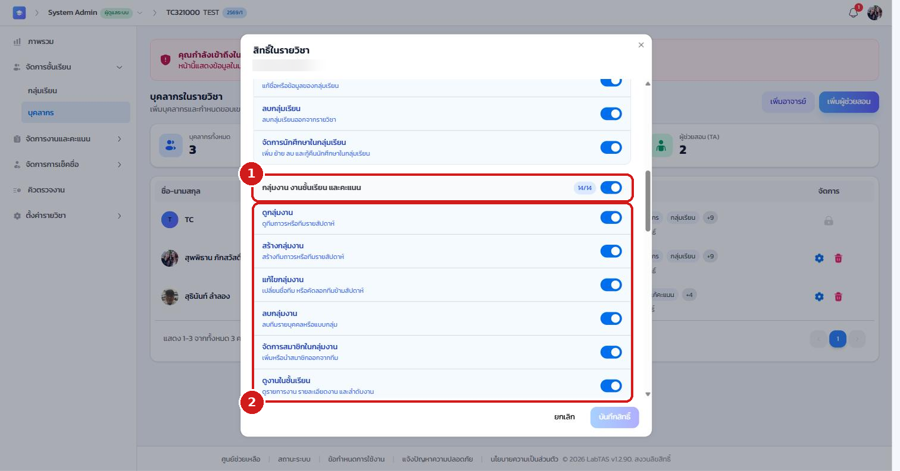

ภาคผนวก ก
สิทธิ์รายวิชาทั้งหมด (39 สิทธิ์)
อาจารย์เจ้าของวิชากำหนดสิทธิ์เหล่านี้ให้อาจารย์ร่วมและผู้ช่วยสอนรายคนได้ที่ แท็บบุคลากร > ไอคอนรูปเฟือง เมนูที่ผู้ใช้แต่ละคนเห็นในห้องเรียนขึ้นกับสิทธิ์ชุดนี้โดยตรง ระบบมีชุดสิทธิ์สำเร็จรูป (Preset) ให้ 3 ชุด ได้แก่ ดูอย่างเดียว (เข้าแท็บและดูข้อมูลได้แต่แก้ไขไม่ได้) ช่วยสอนปกติ (เหมาะกับ TA ที่ช่วยเช็กงาน ดูคะแนน และดูคิว) และ ผู้ประสานงานรายวิชา (ดูแลการสอนเกือบทั้งหมด ยกเว้นการเป็นเจ้าของวิชา) โดยเลือก Preset แล้วปรับรายข้อต่อได้

ภาพผนวก ก หน้าต่างกำหนดสิทธิ์ (หมวดที่ 2 จาก 3)
ก.1 หมวดบุคลากรและโครงสร้างรายวิชา (10 สิทธิ์)#
| สิทธิ์ | คำอธิบาย |
|---|
| แก้ไขข้อมูลรายวิชา | แก้ไขการตั้งค่ารายวิชา เช่น รหัสวิชา ชื่อวิชา ภาคการศึกษา รูปปก และเกณฑ์แจ้งเตือน |
| ดูรายชื่อบุคลากร | เปิดแท็บบุคลากรและดูรายชื่ออาจารย์หรือ TA ในรายวิชา |
| เพิ่มบุคลากร | เพิ่มอาจารย์ผู้สอนหรือผู้ช่วยสอนเข้าสู่รายวิชา |
| นำบุคลากรออก | ลบอาจารย์หรือ TA ออกจากรายวิชา |
| แก้สิทธิ์บุคลากร | ปรับสิทธิ์ของอาจารย์หรือ TA รายคน |
| ดูกลุ่มเรียน | ดูรายการกลุ่มเรียนและรายชื่อนักศึกษาในกลุ่ม |
| สร้างกลุ่มเรียน | เพิ่มกลุ่มเรียนใหม่ในรายวิชา |
| แก้ไขกลุ่มเรียน | แก้ชื่อหรือข้อมูลของกลุ่มเรียน |
| ลบกลุ่มเรียน | ลบกลุ่มเรียนออกจากรายวิชา |
| จัดการนักศึกษาในกลุ่มเรียน | เพิ่ม ย้าย ลบ และกู้คืนนักศึกษาในกลุ่มเรียน |
ก.2 หมวดกลุ่มงาน งานชั้นเรียน และคะแนน (14 สิทธิ์)#
| สิทธิ์ | คำอธิบาย |
|---|
| ดูกลุ่มงาน | ดูทีมถาวรหรือทีมรายสัปดาห์ |
| สร้างกลุ่มงาน | สร้างทีมถาวรหรือทีมรายสัปดาห์ |
| แก้ไขกลุ่มงาน | เปลี่ยนชื่อทีม หรือคัดลอกทีมข้ามสัปดาห์ |
| ลบกลุ่มงาน | ลบทีมรายบุคคลหรือแบบกลุ่ม |
| จัดการสมาชิกในกลุ่มงาน | เพิ่มหรือนำสมาชิกออกจากทีม |
| ดูงานในชั้นเรียน | ดูรายการงาน รายละเอียดงาน และลำดับงาน |
| สร้างงาน | สร้างงานหรือหัวข้อใหม่ในชั้นเรียน |
| แก้ไขงาน | แก้ไขงาน ปรับลำดับ และเชื่อม attendance กับงาน |
| ลบงาน | ลบงานในชั้นเรียน |
| ให้คะแนนงาน | เปิดดูงานและบันทึกคะแนนรายคนหรือรายกลุ่ม |
| แก้ไขคะแนน | แก้คะแนนและส่งคำร้องแก้ไขคะแนน |
| ดูสรุปคะแนน | ดู score summary, matrix และสถิติการให้คะแนน |
| ดูคำร้องคะแนนของตนเอง | ดูสถานะคำร้องที่ตนเองเป็นผู้ส่งหรือดูแล |
| อนุมัติคำร้องคะแนนทั้งหมด | ตรวจและอนุมัติคำร้องคะแนนได้แบบเดียวกับอาจารย์ |
ก.3 หมวดคะแนนสอบ เช็คชื่อ และคิว (15 สิทธิ์)#
| สิทธิ์ | คำอธิบาย |
|---|
| ดูคะแนนสอบ | เปิดดูข้อมูลคะแนนสอบและสถิติ |
| เพิ่มคะแนนสอบ | เพิ่มคะแนนสอบใหม่เข้าระบบ |
| แก้ไขคะแนนสอบ | แก้ไขคะแนนสอบที่มีอยู่แล้ว |
| ลบคะแนนสอบ | ลบข้อมูลคะแนนสอบ |
| แก้การตั้งค่าคะแนนสอบ | ปรับ exam settings หรือสัดส่วนคะแนนสอบ |
| ดูข้อมูลเช็คชื่อ | ดู session เช็คชื่อและรายการเข้าเรียน |
| สร้าง session เช็คชื่อ | สร้าง session เช็คชื่อใหม่ |
| แก้ session เช็คชื่อ | ปรับเวลา เปิด ปิด และแก้ session เช็คชื่อ |
| ลบ session เช็คชื่อ | ลบ session เช็คชื่อ |
| แก้สถานะเช็คชื่อ | อัปเดตสถานะการเข้าเรียนรายคนหรือแบบกลุ่ม |
| ดูคิวตรวจงาน | ดู session คิว รายชื่อ worker และรายการจองคิว |
| สร้างคิวตรวจงาน | สร้าง session คิวตรวจงานใหม่ |
| แก้คิวตรวจงาน | แก้ session คิว เปิด ปิด หยุดพัก และจัดการ worker |
| ลบคิวตรวจงาน | ลบ session คิวตรวจงาน |
| จัดการรายการจองคิว | รับงาน ข้ามคิว ปิดงาน และจัดการ booking |